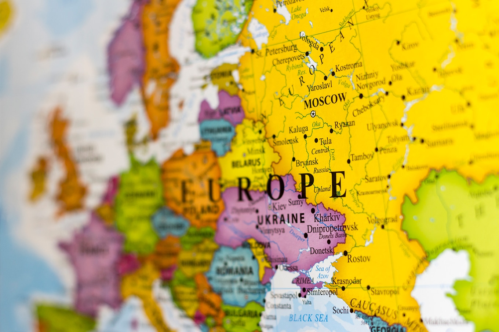
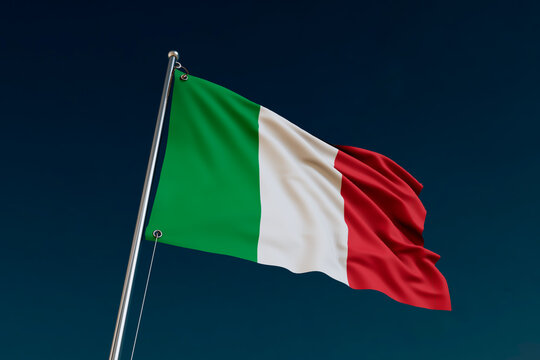
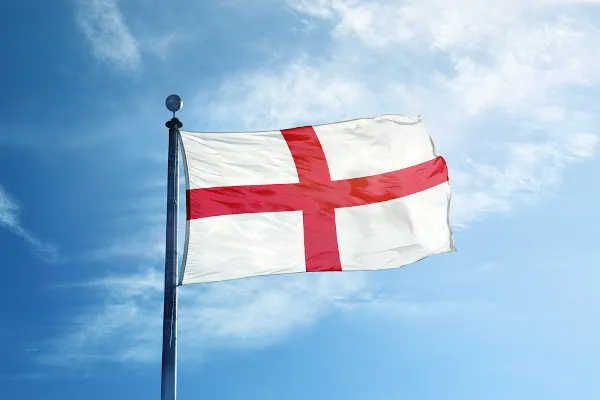

Sem dúvidas, a Europa possui muitos países com pontos turísticos incríveis. Itália, França, Espanha,
Holanda, Alemanha, Inglaterra e Portugal estão entre os mais procurados pelos brasileiros e para ajudar
você a
conhecer um pouquinho de cada lugar,
eu listei os 3 pontos turísticos da Europa que são parada
obrigatória para qualquer turista que está planejando passar por lá. Ficou curioso? Confira abaixo a
lista
com os lugares que, com certeza, valem a pena incluir no
seu roteiro de viagem:
Itália

A Itália, país europeu com uma longa costa mediterrânea, deixou uma marca poderosa na culinária e na
cultura
ocidentais.
A capital, Roma, é sede do Vaticano e abriga obras de arte monumentais e ruínas antigas. Outra cidade
importante é Florença,
com obras-primas do Renascimento, como o "Davi", de Michelangelo, e o Domo de Brunelleschi. Destacam-se
também Veneza,
a cidade dos canais, e Milão, capital da moda italiana.
Conheça mais clicando aqui
França
A França, na Europa Ocidental, tem cidades medievais, aldeias alpinas e praias mediterrâneas. Paris, sua
capital,
é famosa pelas casas de alta costura, museus de arte clássica, como o Louvre, e monumentos como a Torre
Eiffel.
O país também é conhecido pelos vinhos e pela cozinha sofisticada. Antigos desenhos da caverna de
Lascaux,
o Teatro Romano de Lyon e o amplo Palácio de Versalhes atestam a sua rica história.
Conheça mais clicando aqui
Inglaterra

A Inglaterra, local de nascimento de Shakespeare e dos Beatles, é um país nas ilhas britânicas que faz
fronteira com a Escócia e o País de Gales.
A capital, Londres, situada às margens do rio Tâmisa, abriga o Parlamento, o Big Ben e a Torre de
Londres,
do século XI.
A cidade é também um moderno centro multicultural de artes e negócios.
Outras grandes cidades são Manchester, Birmingham, Liverpool, Bristol e os centros universitários de
Oxford
e Cambridge.
Conheça mais clicando aqui